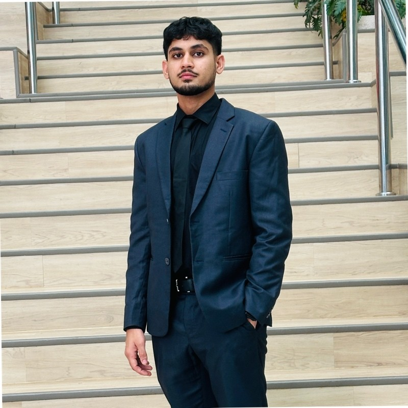

Abdullah Taufiq
builds thoughtful AI systems.
AI engineer specializing in multi-agent systems, GraphRAG and retrieval pipelines — turning research-grade LLM techniques into production tools people actually rely on.

I'm a computer science graduate who specialized in AI, and now spend my days architecting the systems that sit underneath modern LLM products: agent orchestration, knowledge graphs, and retrieval.
At BrainyAI I've taken a production agentic platform from early prototype to a stable deployment serving a fast-growing user base — designing multi-agent workflows, modeling million-node knowledge graphs, and combining vector search with graph traversal to make answers more grounded.
I care about the unglamorous parts too: observability, cost, latency, and reliability — the details that decide whether an AI product actually holds up in production.
Where I've built things
A path from customer-facing operations to production AI engineering.
- Architected and scaled BrainyAI's production-grade agentic platform from an early prototype to a stable deployment supporting a rapidly growing user base.
- Designed LLM-driven agent workflows in LangChain with parallel tool calling, cutting average response latency by 35%.
- Built multi-agent architectures on the Letta SDK with persistent shared memory, reducing long-term context overhead by 25%.
- Orchestrated end-to-end pipelines in n8n, integrating external APIs to cut manual data processing time by 40%.
- Modeled knowledge graphs spanning 1,000,000+ nodes in Neo4j/FalkorDB, tuning indexes for sub-50ms multi-hop queries.
- Deployed hybrid RAG + GraphRAG retrieval, improving grounded answer precision by 18% on internal benchmarks.
- Optimized embedding pipelines across Qdrant and FAISS for 20% savings in infrastructure and API costs.
- Added observability with MLflow, Datadog and PostHog, plus automated retries, reducing incident recovery time by 30%.
- Explored Retrieval-Augmented Generation and LLMs, optimizing document chunking for efficient processing.
- Worked through real-world AI challenges as an early hands-on introduction to production RAG systems.
- Led a customer service team at Dubai Airports, improving resolution rates, satisfaction, and overall performance.
The stack I work in
Grouped the way I actually think about it — as clusters of a working system.
AI & LLM systems
RAG & knowledge graphs
Databases & vector search
Observability & MLOps
ML & evaluation
Automation & workflow
Backend & APIs
Cloud & DevOps
Data science & security
Foundations
BSc Computer Science, Artificial Intelligence
A-Levels
Let's build something.
Open to conversations about agentic AI, knowledge graphs, or interesting engineering problems in general.